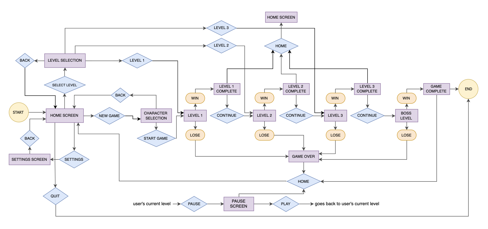
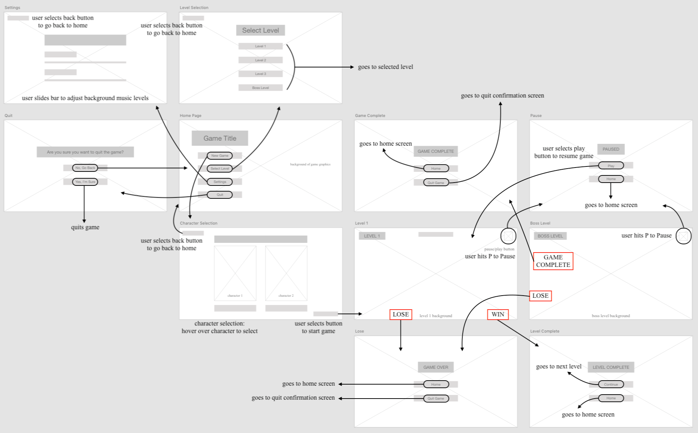

OVERVIEW
About the Project
A desktop, arcade-style game where players must defend the Earth's last pizza from aliens.
My Role: UX/UI Design, Graphics, Game Flow
Tools Used: Adobe Illustrator, Adobe XD, Draw.io, Game Maker Studio 2
Project Context
The game "Pizza Guard" came from the unexpected mashup of two seemingly unrelated concepts. Our professor provided us with two lists of random words and we had to choose a word from each list. From there, the idea of our game evolved from those two words.
Game Summary
In this game, the players are pizzeria's workers who are guarding the pizzeria from waves of invading aliens. Armed with their choice of weapon, the player can shoot and destroy the aliens that are trying to reach one of the four slices of pizza inside. This pizza represents how many lives are left for each level. When all four slices have been taken, you lose. There are three levels that increase in difficulty and a final boss level you must beat to successfully complete the game. The final boss level takes place in space where you face off against the aliens' mothership. The player has to shoot at the mothership while also navigating their own ship to avoid the bullets from the mothership.
Challenges
With a small team of five students from various industry backgrounds, the main challenge was that none of us had ever designed a game before.
DESIGN PROCESS
Define the Users
This game is targeted towards people of all ages especially children. Therefore, we decided to keep the animations fun and bright with basic buttons and a game play that was easy to navigate.
Competitive Analysis
Each group member did a competitive analysis of a similar game. I did mine on Angry Birds. From the research, I found that:
- Angry Bird's game flow and initial navigation is confusing with a lot of different level options.
- The graphics on the main menu are cluttered and distracting, making it hard to navigate the game.
Taking these insights into consideration with our beginner knowledge on game design, we reviewed our initial design of our game and drew inspiration from the research. From there, we set the following goals for our game:
- Create a linear game that was easy for users to navigate seamlessly.
- Design fun graphics that are clean and not too cluttered.
Game Flow
After finializing the general idea of our design, we started to plan out the flow of the game: 
Wireframes
From there, I sketched out the wireframes:

After the wireframe sketches, I used Adobe XD to create the digital wireframes:
Design Principles
Some of the design principles we used were:
-
Confirmation:
When users want to quit to the menu, they must go through a confirmation screen.
Accessibility:
Design is accessible and usable, without modification for all ages.
Alignment:
Placement of buttons all line up to create a sense of unity and cohesion.
Legibility:
Font style used is visually clear, which is important for the target demographic of children.
Game Screens
After I created a rough sketch of what we wanted the levels to look like, our graphic
designer created the game screens:

Final Game Flow
This is an example of how the final game flow looks like:
click on images to enlarge


CONCLUSION
What I Learned
This project strongly challenged our group due to our inexperience in game design. Howevever, this project taught us the importance of communication and the significance of the UX design process. We learned how complicated the flow of a game could result in due to the user's actions. By carefully planning out our process, it made the game easier to implement.